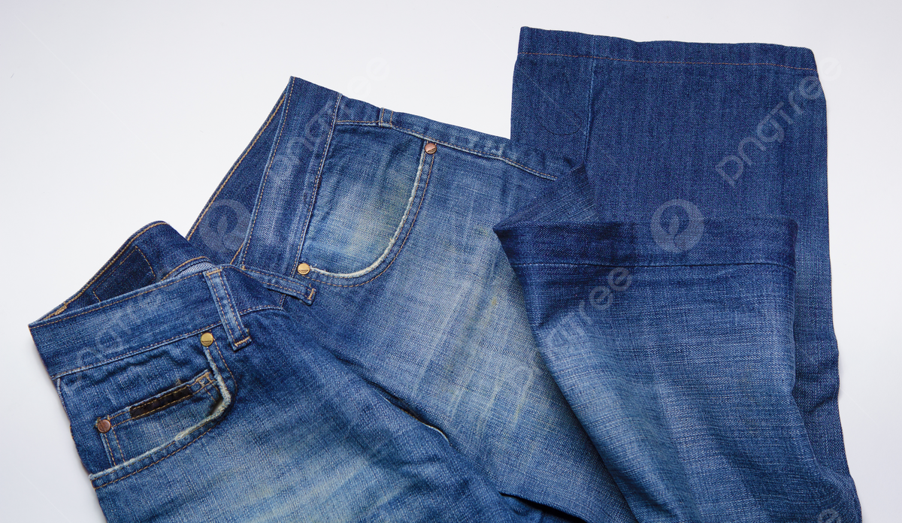
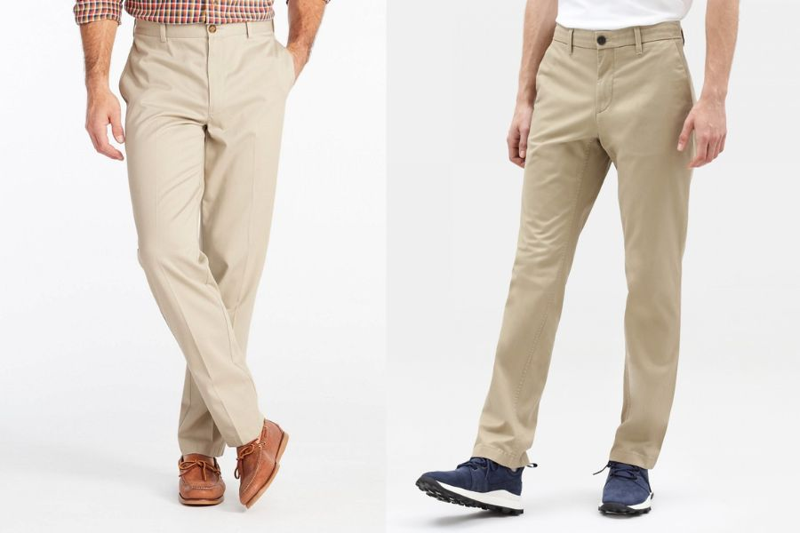
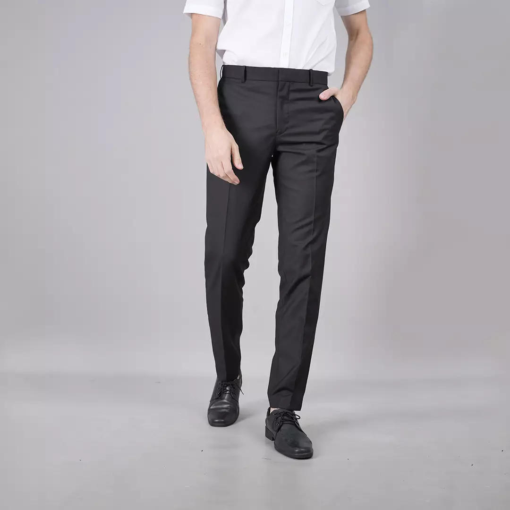
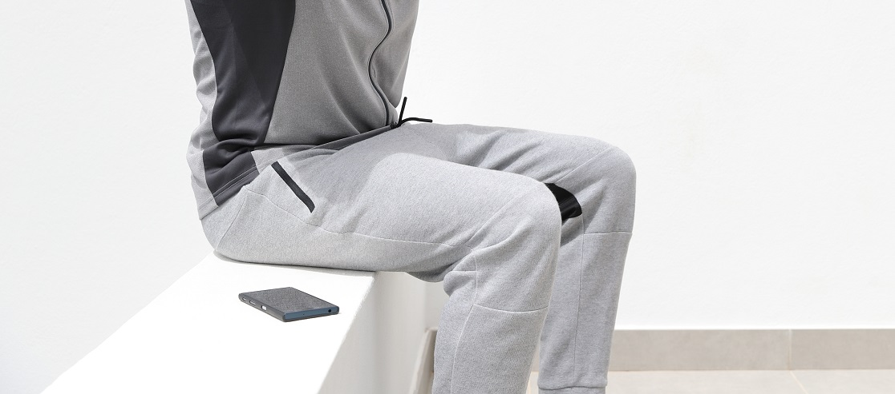
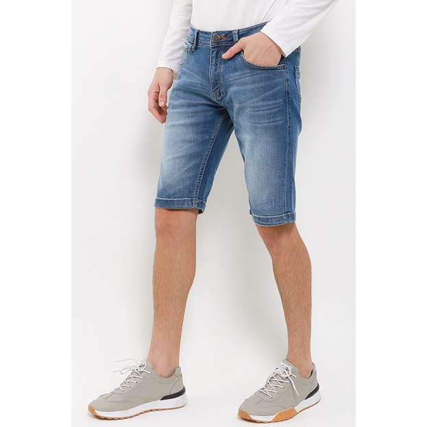

5 Jenis Celana Pria yang Wajib Dimiliki
Pilihan celana pria bisa menjadi hal yang cukup membingungkan. Dari jeans hingga celana formal, ada begitu banyak pilihan yang tersedia. Namun, ada beberapa jenis celana yang sebaiknya ada dalam lemari pakaian setiap pria. Inilah 5 jenis celana pria yang wajib dimiliki:
Jeans Denim

Jeans adalah salah satu pakaian pria paling serbaguna yang bisa Anda miliki. Pilihlah jeans dengan warna yang netral dan nyaman dipakai sehari-hari. Jeans denim yang pas akan selalu menjadi pilihan yang tepat, baik untuk acara santai maupun semi-formal.
Celana Chinos

Chinos adalah alternatif yang sempurna untuk celana formal dan jeans. Mereka biasanya terbuat dari bahan katun yang ringan dan nyaman. Celana chinos hadir dalam berbagai warna yang bisa dipadukan dengan hampir semua pakaian. Dengan gaya yang santai namun tetap terlihat rapi, celana chinos adalah pilihan yang sempurna untuk berbagai kesempatan.
Celana Formal

Setiap pria membutuhkan celana formal yang dapat digunakan untuk acara-acara penting seperti wawancara kerja, pernikahan, atau acara formal lainnya. Pilihlah celana formal dalam warna hitam atau navy yang dapat dipadukan dengan berbagai jenis kemeja dan jas.
Celana Jogger

Untuk gaya kasual dan santai, celana jogger adalah pilihan yang tepat. Mereka biasanya terbuat dari bahan yang elastis dan nyaman dipakai. Celana jogger cocok untuk aktivitas sehari-hari seperti berolahraga, jalan-jalan, atau bahkan untuk menemani saat bersantai di rumah.
Celana Bermuda

Saat cuaca mulai memanas, celana bermuda adalah pilihan yang tepat untuk tetap tampil santai namun tetap terlihat stylish. Pilihlah celana bermuda yang terbuat dari bahan yang ringan dan nyaman dipakai, seperti katun atau linen.